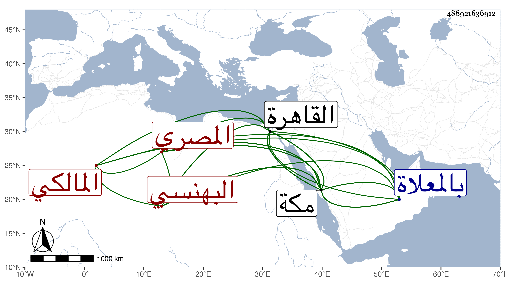

0902Sakhawi.DawLamic.ITO20230111-ara1.EIS1600.488921636912
Biography ID: 488921636912
40
أحمد بن علي بن إسماعيل بن إبراهيم بن موسى تاج الدين أبو العباس ابن القاضي علاء الدين البهنسي الأصل المصري المالكي ويعرف بابن الظريف بالمعجمة المضمومة وتشديد التحتانية بعدها فاء . ولد في المحرم سنة ست وأربعين وسبعمائة بالقاهرة وسمع من ناصر الدين التونسي السنن لأبي داود ومن العز ابن جماعة المسلسل والبردة وغيرهما وبمكة من قاضيها الشهاب الطبري وعلي بن الزين والشيخ خليل المالكي ومحمد بن سالم بن علي الحضرمي ، وطلب العلم فأتقن الشروط ومهر في الفرائض والحساب والفقه وانتهى إليه التميز في فنه مع حظ كبير من الأدب ومعرفة حل المترجم وفك الألغاز والذكاء المفرط ، وقد وقع للحكام بل ناب في الحكم ونسخ بخطه التاريخ الكبير للصفدي وتذكرته بكمالها وشرح عروض ابن الحاجب وجملة ، قال شيخنا في إنبائه وكان يودني كثيرا وكتب عني من نظمي وقد نقم عليه بعض شهاداته وحكمه ثم نزل عن وظائفه بأخرة وتوجه إلى مكة فمات بها في رجب سنة إحدى عشرة ، وقال في معجمه كان أوحد عصره في معرفة الوثائق سريع الخط جدا وافر الذكاء يحل المترجم والألغاز في أسرع من رجع الطرف ناب في الحكم فلم يحمد ثم خم له بخير فإنه حج في سنة عشر فجاور بمكة فمات بها في رجب من التي تليها ، سمعت عليه العاشر من أبي داود وأخبرني الشمس محمد بن علي الهيثمي قال اجتمعت معه فكتبت له مترجما :
| هذا المترجم قد كتبت لكي أرى | من ذهنك الوقاد ما لا يوصف |
| فامنن على بحله في سرعة | إذ كنت في حل المترجم تعرف |
قال فكتب لي بعد أن تفكر فيه لأجل حله :
| إني إذا كتب المترجم لي فتى | أظهرت أني عنده لا أعرف |
| فأطيل فيه الفكر وقتا واسعا | هذا الذي من أجله أتوقف |
وقد ترجمه الفاسي في تاريخ مكة وذيل التقييد وأنه دفن بالمعلاة بقرب الفضيل بن عياض بعد تعلله مدة بالاستسقاء وقال أنه اجتمع به بالقاهرة ومكة ولم يقدر له السماع منه لكنه أجاز له ، وذكره ابن فهد في معجمه وقال أنه أجاز له العفيف اليافعي والشهاب الحنفي والتقي الحرازي وطائفة ولم يدانه أحد في زمنه في معرفة الوثائق والسجلات ولا في سرعة كتابتها بحيث أنه يفرغ من كتابة البسملة قبل أن تجف البسملة في المكتوب الكبير الذي هو عدة أسطر ، وكان جميل المحاضرة حسن العشرة جيد المذاكرة وكان يرمي قبل كتابته بعظائم في تصوير الحق بصورة الباطل وعكسه وامتحن بسبب ذلك وتردد إلى مكة غير مرة ولم يرقى معناه مثله . ومن محاسنه أنه كان لا يرى غضبا بل لا يزال بشوشا انتهى . وقد سمع منه جماعة عدة أجزاء من السنن ممن حدثنا عفا الله عنه .
